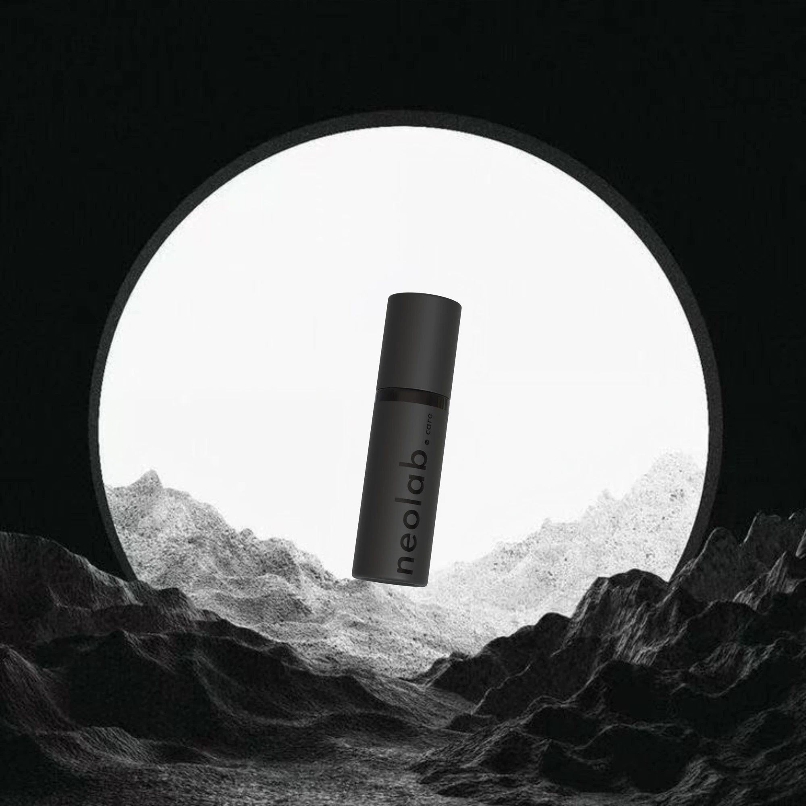
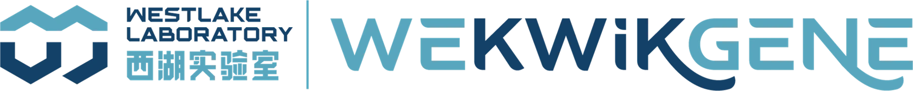
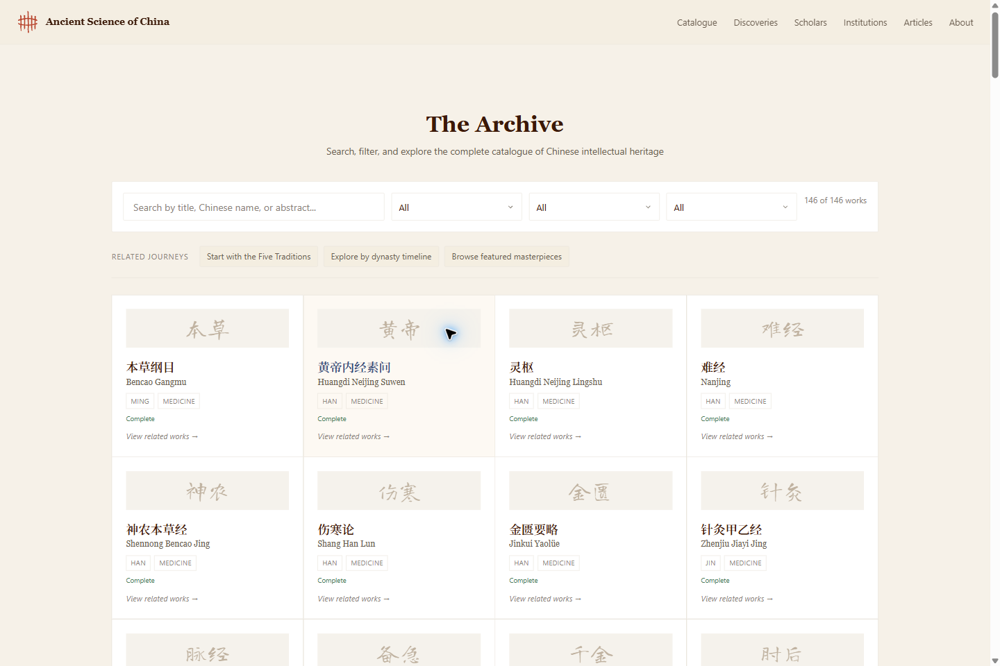
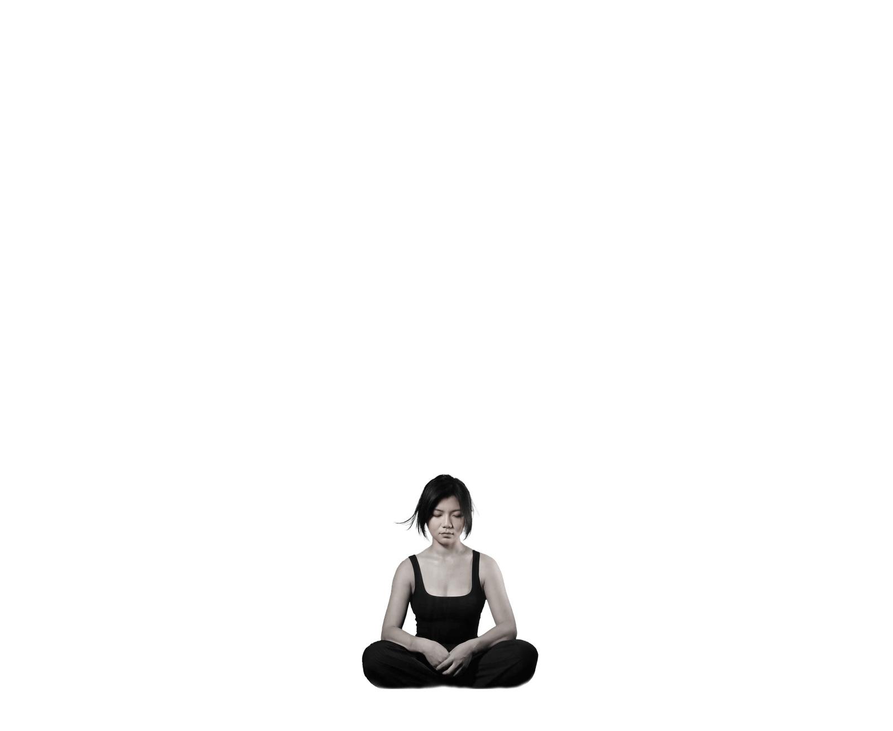
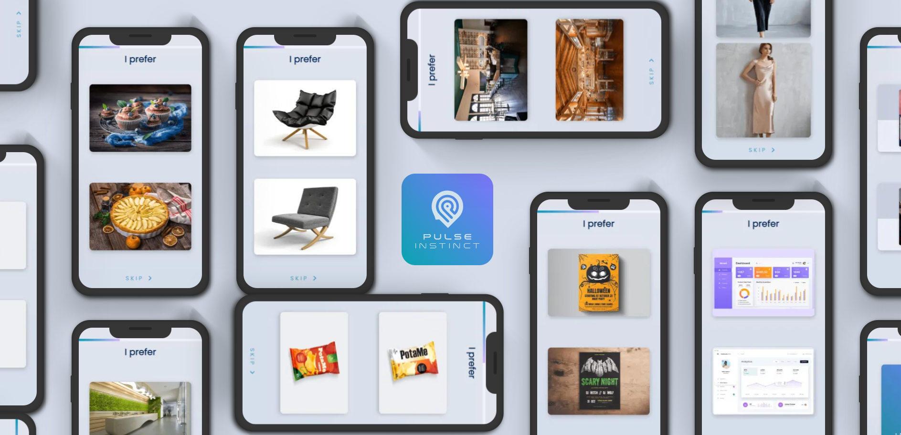

Brand strategy / Identity / Digital experiences
Different worlds.
A Pulse through
each one.
PRIVATE PREVIEW / EDITION 03
Explore the new cases ↓
From learning worlds and living heritage to self-reflection, creative systems and companionship.
Ten projects, each with a visual language of its own.
01 / Robotics / 2026 / Active build

A clear, human introduction to intelligent machines. Strategy, identity and a curated product world.
Enter the case study ↗
02 / Personal care / 2025–26 / Active build

A quieter expression of personal care. Product identity, packaging and an atmospheric visual world.
Enter the case study ↗
03 / Spirits / 2024–25 / Design archive
A pocket-sized expression of botanical flavour. Bilingual identity, labels and a three-bottle gift set.
Enter the case study ↗
04 / Research platform / 2024 / Recovered case

A scientific identity in motion. The complete 15-chapter case study, preserved as you approved it.
Revisit the case study ↗
Edition 03 / Six new project studies
From identity
into experience.
Original marks. Project-specific palettes. Real desktop and mobile screens. Published work and working prototypes are clearly distinguished.
05 / Language learning / Published web & active product
A little play. A world of grammar. Original learning worlds, Gramlin and a mobile-first practice journey.
Enter the case study ↗
06 / Cultural knowledge / Published catalogue

Ancient Science
of China
Knowledge, made discoverable. The warm-paper catalogue at ancientscienceofchina.com.
Enter the case study ↗
07 / Self-reflection / Published web experience
BrainyBaobei
A little more of you, in focus. Ink landscapes, personal reflection and an illustrated chart you can explore.
Enter the case study ↗
08 / Internal product / Active build
Pulse
Growth Engine
Strategy, put to work. Brand evidence, content direction and review in one application. Includes dated internal interface evidence.
Enter the case study ↗
09 / Preference testing / Original 2022 identity & product design

An instinct, made visible. Original identity, mobile testing designs and recovered motion.
Enter the case study ↗
10 / Companion world / Identity & local prototype

A place for presence. The supplied heart/flame identity, day–night atmosphere and an existing garden world.
Enter the case study ↗
The studio behind the work
A clear point of view.
A human perspective.
Pulse Branding frames this collection in its own midnight-blue and cool-light identity. Montserrat meets the softer voice of italic Noto Serif Display, as on the current agency website. Inside each case, the client’s identity leads.
A growing body of work
Strategy you can see.
Work you can explore.
Each case separates the work on record from concepts and next steps. The new studies use original brand assets and real screen captures. No commercial results are implied.
New projects: brand sources & capture notes ↗Explore the original brand-source library ↗
Read the first-edition publication notes ↗